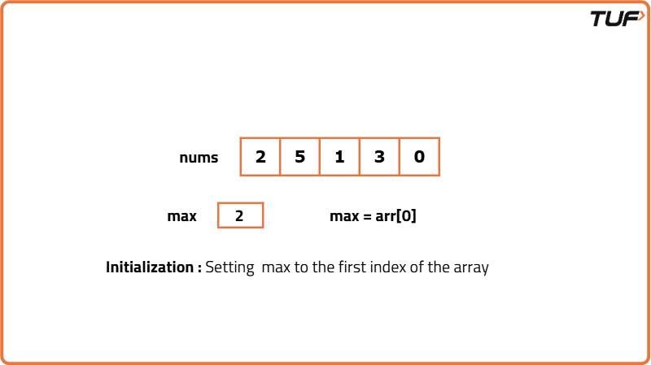
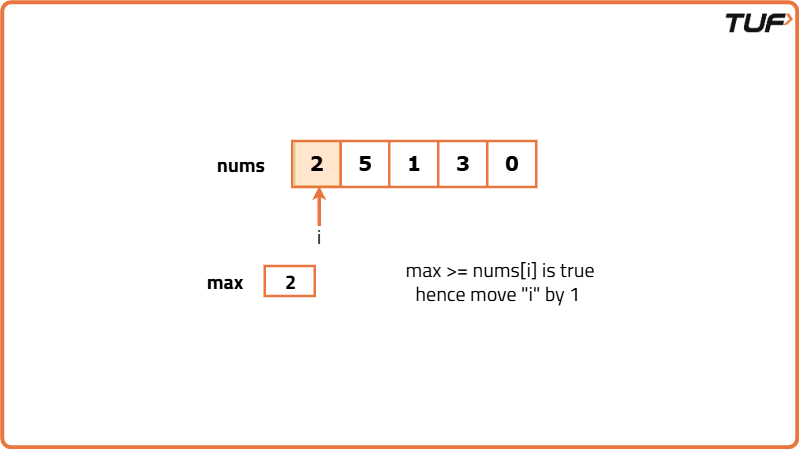
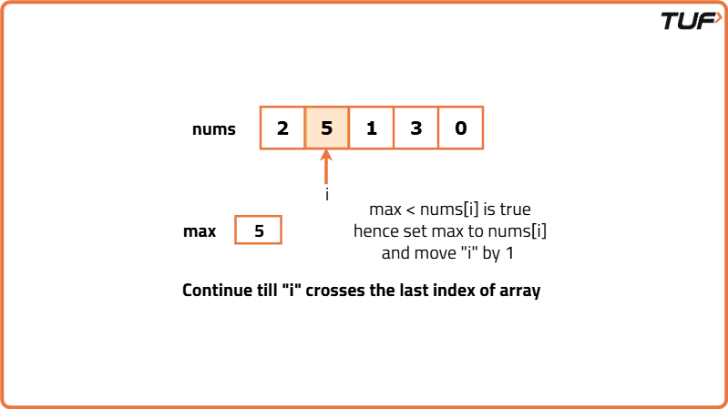
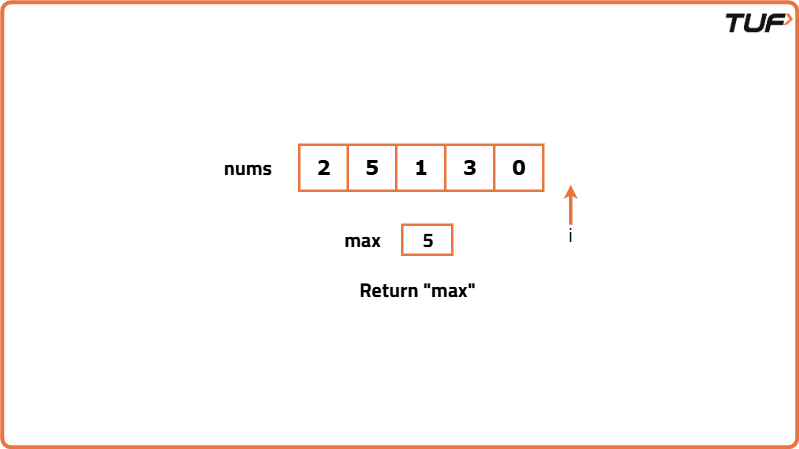

Find the Largest element in an array
Problem Statement: Given an array, we have to find the largest element in the array.
Examples
Example 1:
Input: arr[] = {2, 5, 1, 3, 0}
Output: 5
Explanation:
5 is the largest element in the array.
Example 2:
Input: arr[] = {8, 10, 5, 7, 9}
Output: 10
Explanation:
10 is the largest element in the array.
Disclaimer: Here is the practice link to help you assess your knowledge better. It's highly recommend trying to solve it before looking at the solution.
Brute Force
Algorithm
- Sort the array in ascending order.
- Print the element at the (size of the array - 1)th index, which corresponds to the largest element in the array.
Code
#include<bits/stdc++.h>
using namespace std;
// Function to sort the array and return the largest element
int sortArr(vector<int>& arr) {
// Sort the array in ascending order
sort(arr.begin(), arr.end());
// Return the last element (largest element) after sorting
return arr[arr.size() - 1];
}
int main() {
// Initialize arrays
vector<int> arr1 = {2, 5, 1, 3, 0};
vector<int> arr2 = {8, 10, 5, 7, 9};
// Find and output the largest element in both arrays
cout << "The Largest element in the array is: " << sortArr(arr1) << endl;
cout << "The Largest element in the array is: " << sortArr(arr2);
return 0;
}Complexity Analysis
Time Complexity: O(N log N), where N is the size of the array, as we are sorting the array.
Space Complexity: O(1), as we are using a constant
Optimal Approach
Algorithm
- Create a variable called max and initialize it with the value of the first element in the array.
- Use a for loop to iterate through the rest of the elements in the array.
- In each iteration, compare the current element with the max variable.
- If the current element is greater than the max value, update the max value with the current element's value.
- After completing the loop, print the max variable, which will hold the largest value in the array.




Code
#include <bits/stdc++.h>
using namespace std;
// Function to find the largest element in the array
int findLargestElement(int arr[], int n) {
int max = arr[0]; // Initialize max with the first element in the array
// Iterate through the array to find the maximum element
for (int i = 1; i < n; i++) {
if (max < arr[i]) { // If the current element is greater than max, update max
max = arr[i];
}
}
return max; // Return the largest element found
}
int main() {
// Array 1
int arr1[] = {2, 5, 1, 3, 0};
int n = 5; // Size of the array
int max = findLargestElement(arr1, n); // Call the function to find the largest element
cout << "The largest element in the array is: " << max << endl; // Output the result
// Array 2
int arr2[] = {8, 10, 5, 7, 9};
n = 5; // Size of the array
max = findLargestElement(arr2, n); // Call the function to find the largest element
cout << "The largest element in the array is: " << max << endl; // Output the result
return 0;
}Complexity Analysis
Time Complexity: O(N), where N is the size of the array, as we are iterating through the array once.
Space Complexity: O(1), as we are using a constant